Force-Aware Closed-Loop Control inside a Physics Digital Twin
PhysTwin
reconstructs deformable objects from video as a calibrated spring-mass simulator.
We extend it into a force-aware control testbed: a learned policy that actively drives virtual grippers
to track a target force profile, closed-loop, frame by frame.
Arshia Ilaty ·
Malak Gamal El-Din
University of California, Irvine · CS 175 / CS 275
PhysTwin
takes RGB-D video of a human manipulating a deformable object — a rope, a piece of cloth, a plush toy —
and fits a spring-mass physics simulation to it. The result is a digital twin: a calibrated
virtual replica that you can re-simulate under new conditions without filming anything new.
The original PhysTwin work focuses on reconstruction and passive replay.
We ask a different question: can we use the simulator to control force?
Specifically — given a target force trajectory, can a learned policy move the virtual grippers,
frame by frame, to achieve that target in the live simulation?
Where the ground truth comes from
We have no physical robot and no force sensors, so it is worth being precise about what
"force" means everywhere on this page. The provenance chain is:
RGB-D video of a human manipulating the object (PhysTwin's input data).
Per-case differentiable optimization (PhysTwin, prior work): spring stiffnesses,
damping, and collision parameters are fit so the simulator reproduces the tracked motion in the video.
Calibrated simulator: once fit, the spring-mass model computes the contact force at the
grippers from spring stretch — exactly, at every frame, for free.
Our labels: every force value in this project — training targets, the achieved force
F(t) fed back to the policy, and the error metric — is this simulator spring force.
"Ground truth" = the calibrated twin's internal physics, not a sensor measurement.
This is both the limitation (we inherit PhysTwin's calibration accuracy) and the opportunity:
inside the twin the force signal is exact, dense, and free, which makes rigorous closed-loop
control experiments possible at zero hardware cost.
Forward vs inverse — what "inversion" means here
Forward problem (Arshia)
Inverse problem (Malak)
Question
Given a motion, what force results?
Given a desired force, what motion produces it?
Input
gripper trajectory + deformation features
target force trajectory F*(t) + current state
Output
predicted contact force
gripper motion, executed step by step
Type
regression (open-loop prediction)
inverse dynamics + feedback control (closed-loop)
So "inversion" is not "estimating force" — it is the control-theoretic inverse of the
force-generation map: we invert motion → force into desired force → motion.
Estimating force from deformation (the forward map) is the prior work and Arshia's track;
commanding it is ours.
What makes this novel
This is not a typical VLA / imitation-learning setting, and the novelty is the
setting itself: a commanded-force, closed-loop control problem on a per-video-calibrated
digital twin. The clearest way to see it is to line up inputs, outputs, and supervision against
the nearest prior work:
Approach
Input
Output
Supervision
What it can't do
PhysTwin (Jiang et al., 2025)
RGB-D video
calibrated spring-mass twin + recovered forces
per-case physics optimization
reconstruction & replay only — no control
VLA policies (RT-2, OpenVLA, π0)
images + language
action chunks
large-scale demonstrations
no explicit force goal; force is never an input or output
Learned deformable dynamics (RoboCraft, RoboCook)
point clouds
predicted particle motion, used for planning
sim/real state transitions
plans shapes, not contact-force profiles
Classical force control (impedance / admittance)
F/T sensor reading
joint torques
none (hand-designed law)
needs a physical sensor + rigid-body model; deformables break it
Ours
physics state + achieved force + commanded force goal
per-gripper displacements, closed-loop
inverse-dynamics BC + force-tracking RL reward
(lives inside the twin — see limitations)
Concretely, we implement a closed-loop driver hooked directly into PhysTwin's Warp GPU
simulator, build a policy dataset from real and synthetic rollouts, and train policies that
actively regulate contact force — not just replay or predict it. No prior PhysTwin work
does this, and none of the neighboring lines above takes a force trajectory as the task
specification.
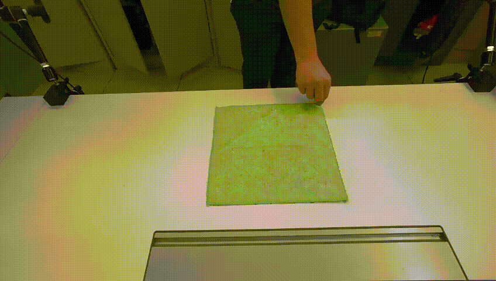
Cloth — simulator force arrows
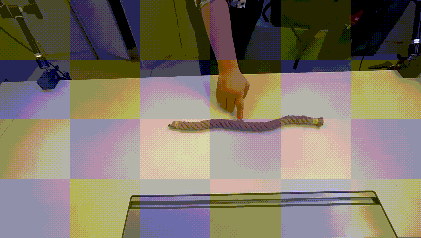
Rope — simulator force arrows
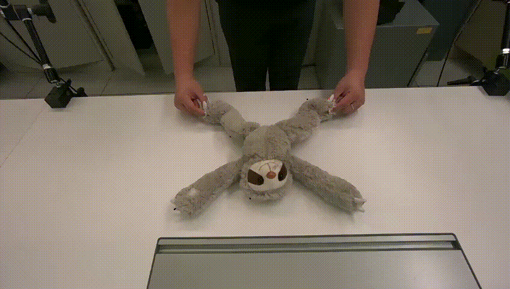
Sloth — simulator force arrows
Force arrows are computed from spring stretch inside the simulator — no physical sensors involved.
Colored arrow = achieved force; dashed arrow = goal force (in closed-loop rollouts).
Problem Setup
What are we controlling?
At each simulation frame, the policy receives a feature vector describing the current state of the
object and grippers, along with the current contact force and the desired force for the next frame.
It outputs a 6D displacement — how to move each gripper centroid this step.
The simulator advances, recomputes spring forces, and the loop repeats.
GoalTrack a target force trajectory F*(t) in a live simulation rolloutInput (per frame)~45-dim feature vector: particle statistics + current achieved force per gripper + goal force per gripper + material descriptorOutput (per frame)6D gripper displacement [Δx, Δy, Δz] × 2 handsSupervision (BC)Per-frame inverse-dynamics regression: action = gripper_centroid[t+1] − gripper_centroid[t], taken from recorded human demonstrations + synthetic rollouts of the same calibrated simulatorSupervision (RL)Reward = −‖F(t) − F*(t)‖ / force_scale; the policy collects its own closed-loop rollouts — no action labels at allSource of force labelsSpring forces computed inside the calibrated PhysTwin simulator (fit per-case to RGB-D video) — no physical force sensors anywhere in the pipelineMetricerr_ratio = mean‖F − F*‖ / mean‖F*‖ (0 = perfect, 1 = error as large as the goal, >1 = uncontrolled)
Two evaluation modes — replay vs ramp
Every policy is evaluated in closed-loop rollouts under two kinds of goal:
Mode
What F*(t) is
What it tests
Replay (in-distribution)
Recorded force from the original dataset case
Can the policy reproduce a trajectory it has seen examples of?
Ramp (out-of-distribution)
Synthetic linear ramp: 0 → peak → 0 over 92 frames. Never seen during training.
Can the policy generalize to a completely novel force goal?
The ramp test is harder in a specific way: to track the descending half, the gripper must
retract — reduce force by pulling away. A policy trained only on human demonstrations
(which never retract on purpose) has no idea how to do this.
What we train on vs what we test on — three nested generalization levels
"Generalization" gets used loosely; here it means three different, increasingly hard tests, and
we run all three. The replay/ramp distinction above is level 2 of this hierarchy:
Frame-level ("random block"). For BC validation we hold out, per case, one
contiguous time window covering 20% of the frames, starting at a random frame.
The window being contiguous is the point: a random frame-wise split would put frame
t in train and frame t+1 in test, leaking the answer through velocity
features. This split only measures "did the network learn the one-step inverse map" — it says
nothing about deployment.
Trajectory-level (the real test). The deployment metric is a closed-loop
rollout on a goal F*(t) invented at test time — the synthetic ramp appears in no
training trajectory. New goal, new gripper motion, new particle evolution.
Material-level (the strongest test). Hold an entire material out of training
— weights and output scalers never see it — and rely on the physics descriptor to transfer.
Measured in Experiment 10 below.
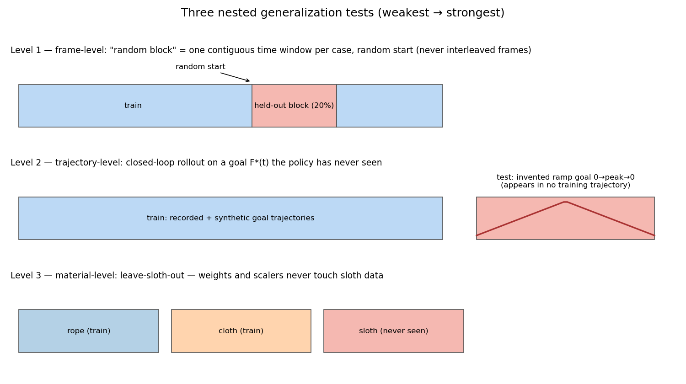
The three nested splits. Top: "random block" = one contiguous held-out window per case with a
random start — never interleaved frames. Middle: the test goal is invented, not held out.
Bottom: leave-one-material-out.
A recurring lesson of this project: level-1 validation loss does not predict level-2
performance. Several "improvements" lowered validation loss and then destroyed
closed-loop control. Every claim on this page is therefore backed by level-2 (or level-3)
closed-loop rollouts.
What the policy actually sees — the feature vector
The raw simulation state is hundreds of particle positions. We collapse this into a fixed-size
summary so the policy input is the same length regardless of object or case:
Shape change — centroid displacement, bounding-box deformation (captures how much the object has deformed)
Contact — per-gripper distance to nearest particles
Current & goal force — Fnow and Fgoal, each 2×3 (Fx, Fy, Fz per hand)
Material descriptor — 2D encoding of material and operating scale (see below)
Look at the data first
Before any modeling, here is the actual data the labels come from. Each line below is one
case's recorded net contact force over time, computed from spring stretch in the calibrated
simulator. Two things matter for everything that follows:
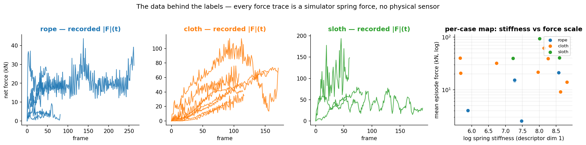
Left three panels: recorded net |F|(t) per case — every training label is a point on one of
these curves. Right: each dot is one case, placed by its calibrated stiffness (x) and mean
episode force (y, log scale).
Force scales span 40× within the dataset: rope cases run 2.6–21 kN
mean force, cloth 9–61 kN, sloth 39–94 kN. A single network regressing raw forces
across these regimes must learn what amounts to three different units.
Stiffness alone does not separate the materials — in the scatter, rope,
cloth, and sloth overlap on the x-axis (log stiffness ≈ 6–9) but separate on the y-axis
(force scale). Keep this panel in mind: it is the geometric reason behind both the
material descriptor below and the leakage problem we later uncover in it.
The 2D material descriptor — intuition
The same policy network handles rope, cloth, and sloth. Without a material hint, the network
must tell rope from cloth from particle statistics alone — often impossible. We add a
two-number fingerprint: [log(spring_stiffness), log(mean_force_in_episode)] —
i.e. the (x, y) coordinates of the case in the scatter above.
log(spring_stiffness) — how stiff the object is. A true physics property:
for the same gripper motion, a stiff object generates more force, so the policy should move
less per unit of desired force change. Log scale because stiffness varies by orders
of magnitude.
log(mean_force) — the operating regime of the episode. Tracking a 90 kN
sloth stretch and a 3 kN rope nudge need gripper strategies that differ in scale, not
just direction.
This fingerprint is what lets a single policy work across all three materials. But note the
asymmetry the scatter already shows: the y-coordinate (force scale) carries most of the
separation between materials — and unlike stiffness, the recorded episode's mean force
is information you don't legitimately have before acting. In Experiment 6 below we show this is
exactly where the descriptor was quietly cheating, and how we replaced it with the
commanded goal's scale, which is deployment-legitimate.
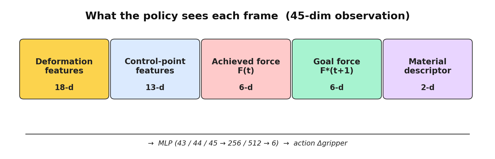
Breakdown of what goes into the policy observation at each timestep.
Arshia Open-Loop Physics Sweeps & Forward Model
Teacher forcing: replay a fixed synthetic gripper script with no feedback.
The only variables are physics knobs — object stiffness (×0.5, ×1.0, ×2.0) and surface proxies
(concrete, grass, rubber). Same motion every time; measure how peak contact force responds.
Pick donor case per material (cloth, rope, sloth) and a motion script (hold_release or linear_push).
Replay identical controller trajectory while scaling stiffness and swapping surface friction/restitution.
Record per-frame net wrench from the simulator — 27 scenarios (54 in expanded grid).
Plot peak force vs stiffness and force trajectories over time.
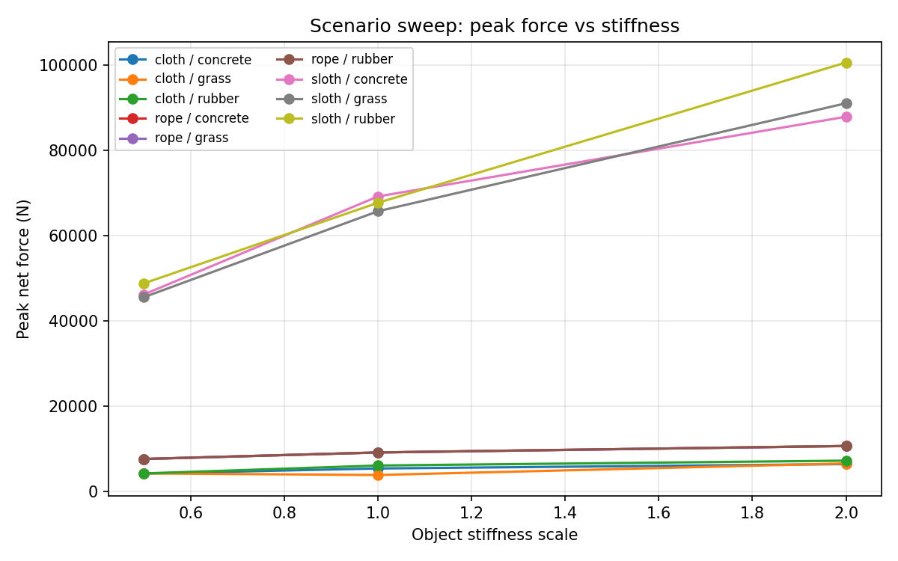
Main result: for fixed motion, stiffer objects produce higher peak force (+40–90% across materials). Surface friction is secondary for these motions.
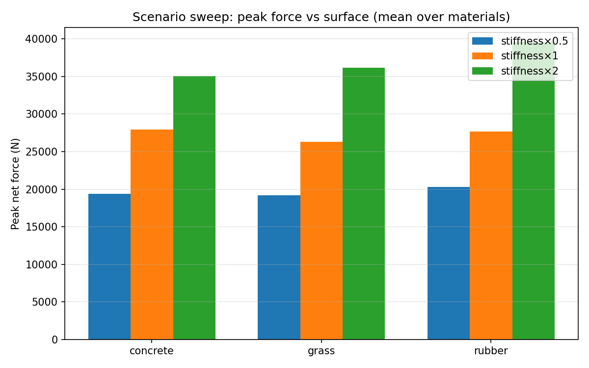
Peak force vs surface (averaged across materials)
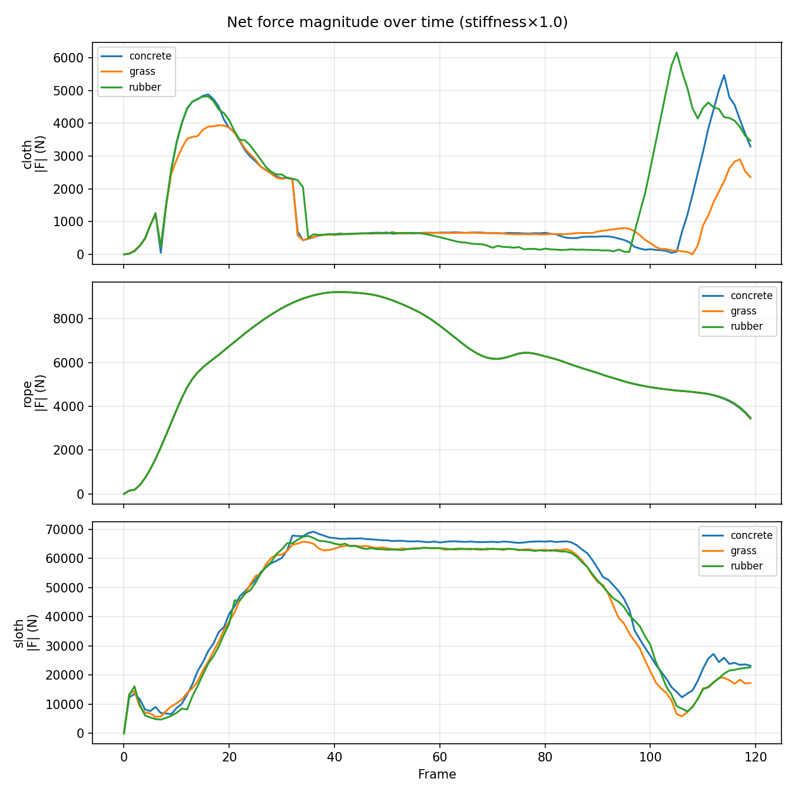
|F|(t) at baseline stiffness — shows timing and shape
Forward ML — deformation → force
A per-material MLP maps the summary features to net wrench.
We report two evaluation modes that answer different generalization questions.
Split
Question
How it works
Cloth R²
Rope R²
cross_case
New manipulation held out?
Entire test case unseen during training
0.62
negative*
random_block
Unseen frames in same trajectory?
Hold out ~20% contiguous frame blocks per case
0.90 ± 0.05
0.59 ± 0.05
*Rope cross-case: train on single-hand push → test on two-hand case — regime mismatch, not under-training.
Cloth — predicted vs actual (random_block split)
Rope — predicted vs actual (random_block split)
While Arshia characterizes the forward direction (deformation → force),
Malak addresses the inverse: given a desired force, what gripper motion achieves it?
Malak Closed-Loop Force Control
From teacher forcing to student forcing
In machine learning, teacher forcing means feeding the correct ground-truth input
at each step during training. It produces fast convergence, but at deployment the model gets
its own (imperfect) outputs instead. If the model made a small error at step t,
step t+1 sees a state that never appeared in training — and errors compound.
This is called exposure bias or covariate shift.
Arshia's open-loop setup is teacher forcing: the expert gripper trajectory is replayed exactly.
Malak's closed-loop setup is student forcing: the policy drives grippers at every step.
One imperfect move puts the simulation into a state outside the training distribution,
and the policy has no training signal for recovering from it.
This distinction explains almost every failure mode in the experiments below.
The loop, every frame: the policy reads the state, the achieved force F(t), and the
goal F*(t+1); it outputs a gripper displacement; the simulator advances and emits a new
achieved force, which feeds back into the next decision. Cut the red feedback arrow and you
have open-loop replay.
Running example — double_lift_cloth_1
The diagram is just boxes; here is the same loop as a concrete story, one rollout step by step.
t = 0
Cloth hangs between two grippers, roughly at rest. Contact force ≈ 0.
The policy receives 45 numbers: particle centroid offset (near zero), bounding-box size (resting dimensions),
velocity magnitudes (near zero), per-gripper distances to cloth, current force = [0,0,0,0,0,0],
goal force = first frame of the recorded force trajectory, and the cloth material descriptor.
t = 1
Policy outputs [Δx₁,Δy₁,Δz₁, Δx₂,Δy₂,Δz₂] — a small upward nudge to each gripper.
The simulator advances: particles move, springs stretch, new forces are computed.
Achieved force is now a small upward pull.
t = 2…T
The loop repeats. At each step the policy observes the current state and current force,
compares to the goal, and decides how to adjust. The gripper trajectory is entirely the
policy's own — not from any demonstration.
eval
At the end, we compute err_ratio = mean‖F − F*‖ / mean‖F*‖ over the full rollout.
For this case (BC best), err_ratio = 0.22.
BC best case — double_lift_cloth_1, err_ratio 0.22. Colored arrow = achieved force; dashed = goal force. Policy tracks the recorded trajectory closely.
BC ramp failure — same case, but now F*(t) is a synthetic ramp that peaks and comes back to 0. BC never retracts: err_ratio = 6.55.
The ramp failure is not a fluke. The BC policy was trained only on human demonstrations,
which never require deliberate retraction. When the goal drops back to zero,
the policy is in an unseen state and has no learned behavior for pulling back.
Release fraction (fraction of frames where force correctly decreases as goal decreases): BC = 0.04. It barely moves.
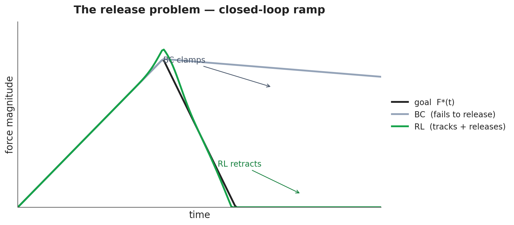
The release problem: BC stalls at peak force when the ramp starts descending because it was never trained on states where retraction is needed.
The same loop on a hard goal — one rope-ramp rollout, phase by phase
The cloth walkthrough above is the easy case (a goal from the training distribution). Here is
the same loop on the hard case — the synthetic rope ramp from the headline video
(Experiment 2 below). We reset the twin to frame 0 of a rope case and command an invented goal:
pull with a force ramping 0 → ~17 kN → 0 over 92 frames. Read each row as
"what the policy sees → what it must do":
Phase
Frames
What the policy reads
Correct behavior
What you see in the video
Grasp
0–5
F(t) ≈ 0, F* small
tiny tightening moves
achieved-force arrow starts to grow
Rising edge
5–45
F(t) < F*(t+1), gap growing
pull harder each frame
colored arrow chases the dashed goal arrow up the ramp
Peak
~46
F(t) ≈ F* ≈ 17 kN
hold
arrows co-located
Falling edge — the hard part
46–92
F(t) = high, F*(t+1) = low
retract to shed force
BC stalls here (release fraction 0.04 — keeps pulling); RL reverses the gripper (0.87)
The falling edge is the whole point: (high now, low next) is the one input region
that never appears in teacher-forced training data, so BC has no behavior for it.
err_ratio is simply the average arrow-gap over the whole trace.
Policy I/O summary
Field
What it is
Size
state
Particle summary features (centroid, bbox, velocity, contact)
31
force_now
Current per-group contact force
2 × 3 = 6
force_goal
Target force for next frame (recorded or synthetic ramp)
2 × 3 = 6
material
2D descriptor [log stiffness, log mean force]
2
→ action
Per-group gripper centroid displacement
2 × 3 = 6
Total input: 45 dims (base BC). Expanded to 48–49 with learned encoder variants.
Open Loop vs Closed Loop — When Does Feedback Matter?
This is the teacher-forcing / student-forcing story made quantitative. BC is trained
teacher-forced (fed recorded states); at deployment it runs student-forced
(fed the states its own actions produce). The force_now feedback channel is the
policy's only way to notice its own drift. So: how much is that channel actually worth?
To isolate it, we run a controlled ablation: retrain the same policy — same dataset,
same split, same architecture, same epochs — with the force_now input zeroed out
in both training and evaluation. If feedback is essential, performance should collapse.
The answer is more nuanced, and it splits exactly along the forcing boundary:
Replay (in-distribution): removing feedback barely changes performance
(frame-level validation loss: 0.317 with feedback vs 0.361 without). When the goal is
something training naturally produces, the goal command alone determines the right action —
the policy doesn't need to read back its realized force.
Ramp (out-of-distribution): removing feedback costs +1.48 err_ratio on
cloth ramp and +0.65 on sloth. Under a novel goal the state drifts off-distribution
(student forcing), and only the closed-loop policy can sense that drift through
F(t) and correct. At the ramp's end, the open-loop policy — blind to the force it is holding —
finishes at 2–3× the residual force of the closed-loop one.
In other words: feedback's value is concentrated at the edge of the training distribution —
which is also precisely where RL's value showed up. Feedback and on-policy training attack the
same failure (student-forcing drift) from two different sides.
err_ratio comparison: open-loop (no feedback) vs closed-loop. Gap is small on replay, large on ramps.
Achieved vs target force over time. Open-loop (orange) diverges on ramp; closed-loop (blue) partially tracks it.
Side-by-side simulation videos
Watch how the two policies differ — especially on the ramp tests (right column below).
Rope — recorded goal (replay test)
Closed-loop (feedback on)
Open-loop (feedback zeroed)
Rope — ramp goal (OOD test)
Closed-loop — partially tracks the ramp
Open-loop — can't adapt without feedback
Cloth — ramp goal (OOD test)
Closed-loop on cloth ramp
Open-loop on cloth ramp — force overshoots and stays high
Malak Experiments & Improvements
The closed-loop work proceeded in stages. Each experiment addressed a specific failure mode
identified in the previous one. The pipeline below is shared by all of them — what changes
between experiments is the policy architecture, the conditioning, and the training signal.
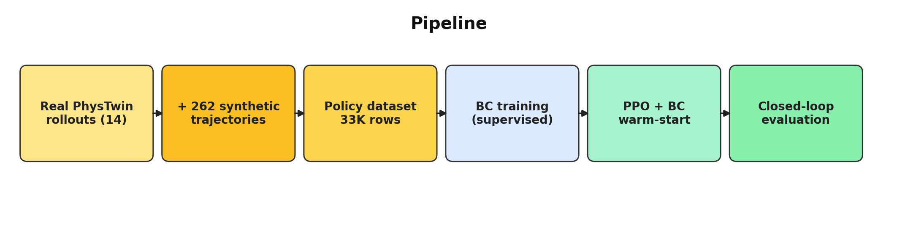
The shared pipeline: 14 real PhysTwin rollouts are augmented with 262 synthetic trajectories
(scripted motions on the same calibrated simulators) into a 33K-row (state, action, force)
dataset; policies are trained supervised (BC), optionally fine-tuned with PPO, and always
judged by closed-loop rollout — never by validation loss.
A 43-dim → 6-dim MLP trained by imitation on 14 real PhysTwin cases plus 218 synthetic
trajectories generated by replaying the simulator under random motion families (~33K rows total).
Replay performance is decent — the policy learned to imitate the human trajectory well enough
to reproduce familiar forces. Ramp performance is catastrophic: the policy never encountered
states where it needed to retract, so it simply doesn't.
BC on rope replay — reasonable tracking
BC on rope ramp — stalls, never retracts (release fraction 0.04)
2 — Reinforcement Learning (PPO warm-started from BC)
We wrapped PhysTwin's simulator as a custom OpenAI Gym environment (no Stable-Baselines3 dependency)
and fine-tuned the BC policy with PPO. RL collects its own closed-loop rollouts,
so by definition it trains on the student-forcing distribution. The release problem disappears:
release fraction 0.04 → 0.87. The rope ramp video below shows qualitatively different behavior
— the gripper now retracts when the goal drops.
The BC baseline used a single material category one-hot. This doesn't tell the policy
how stiff the object is, or what force magnitude to expect. We replaced it with
[log(spring_stiffness), log(mean_force)]. The log scale was chosen because
stiffness varies by orders of magnitude across materials; a raw difference isn't useful.
Replay performance improved substantially — particularly for rope and sloth, where the
force scale mismatch with cloth was largest.
BC + 2D descriptor on rope replay (0.46 vs 0.75 without descriptor)
BC + 2D descriptor on rope ramp — still struggles to retract
4 — Transformer Backbone + Scheduled Sampling
cloth replay 0.305 · rope replay 0.391 — both better than RL
We rebuilt the policy as a 12-token transformer: 8 past frames of history and 4 future commanded-goal
frames, with FiLM material conditioning (see next). The diagram below shows exactly what the
network reads each frame — note that the goal preview comes from the commanded
trajectory (always known at deployment), and material physics enters by modulating activations
(FiLM), not as a token the attention can latch onto.
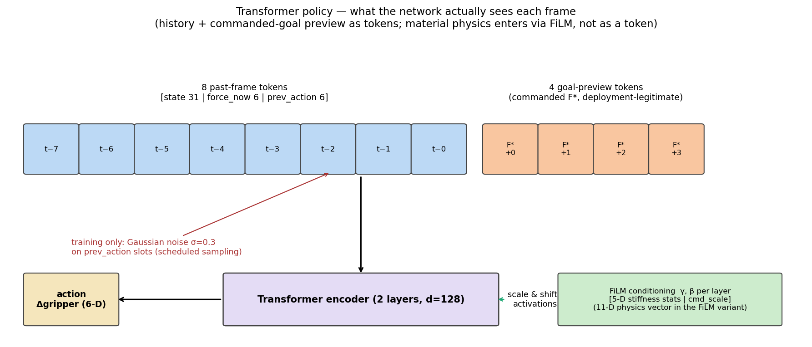
The transformer policy's per-frame view: 8 past-frame tokens (state, achieved force, own
previous action), 4 commanded-goal preview tokens, FiLM conditioning from the material
physics vector, 6-D gripper action out. The red annotation marks the single change that
fixes exposure bias.
Without any noise, this model achieved the
best honest in-distribution replay ever (rope 0.421) — but catastrophically regressed
on OOD ramps (sloth ramp: 29.5). A more expressive teacher-forced model is more brittle
out-of-distribution: it now conditions on its own past actions, so the compounding-error loop
is amplified.
The fix is conceptually clean: inject Gaussian noise (σ=0.3) into the previous-action input
during training. This is a form of scheduled sampling (also called DART) —
simulating the student-forcing distribution during supervised training, so the model learns
to recover from small errors. Result: sloth ramp collapses from 29.5 → 2.25.
Cloth replay 0.305, rope replay 0.391 — both beating the RL policy.
This is the clearest result of the project: the right fix for student-forcing is to
train under it, not to add RL. Architecture and training distribution matter more
than the optimization algorithm.
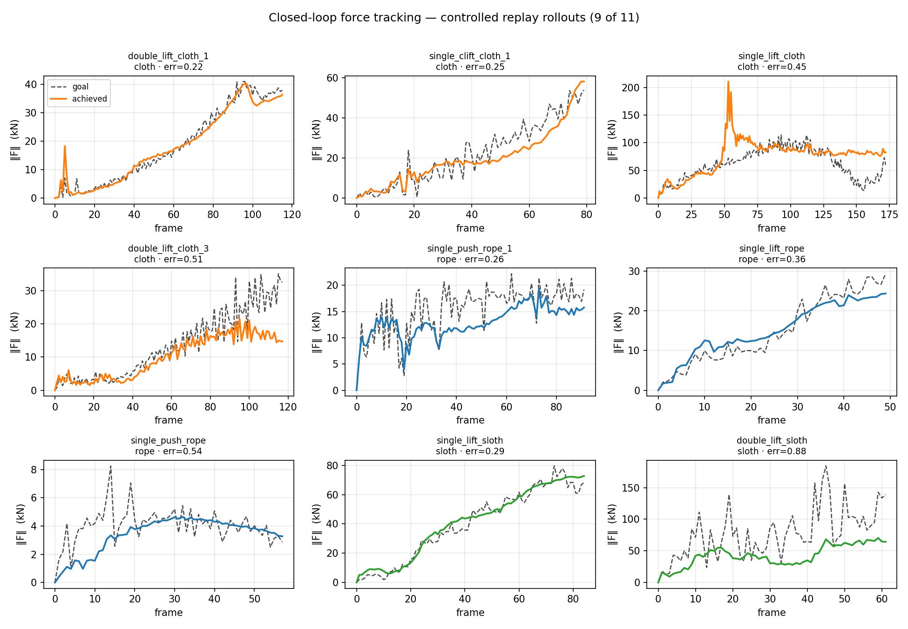
Achieved vs target force across all material/mode combinations. The noise-injected transformer achieves the best replay tracking of any policy in the project.
5 — FiLM Conditioning + Enriched Physics Descriptor
sloth ramp 1.38 — all-time project best | beats/ties RL on 5 of 6 groups
FiLM (Feature-wise Linear Modulation) applies the material descriptor not by concatenating it
to the input, but by using it to scale and shift the network's activations multiplicatively
at each layer. This is designed to avoid cross-material interference: cloth and rope share
weights, but the FiLM conditioning pushes each material into a different region of activation
space rather than making the material just one more input to memorize.
We swept descriptor dimension from 0 to 11, and tried two injection strategies:
(a) FiLM, and (b) adapter token — a per-case embedding injected into the attention sequence.
The adapter token is harmful: it gives the network a case-identity anchor
and the model memorizes it instead of generalizing (sloth ramp blows up to 8.35).
Enriched 11D FiLM (splitting object/control spring stiffness and adding calibrated
friction/elasticity) improves every OOD ramp: sloth ramp reaches 1.38,
the all-time best in the project.
Cloth results across policy variants. FiLM + enriched descriptor improves ramp without hurting replay.
FiLM 11D — double_stretch_sloth ramp, err_ratio 1.38 — all-time project best on OOD ramp. The policy partially tracks the ascending ramp and releases on the descent, unlike BC (which stalls at peak).
RL on sloth replay (err_ratio 0.66) for comparison — RL is better on replay; FiLM beats RL on this ramp.
6 — Leakage Audit: the Material Descriptor Was Partly Cheating
honest negative result — rope replay collapses 0.46 → 0.84 without force scale
After the 2D descriptor showed strong replay improvements, we asked: why?
The second component is log(mean_force_in_episode) — the average force magnitude
across the episode. On replay tests, this value comes from the recorded data,
which is essentially the same as the target trajectory. So the policy was getting a hint
about the goal's force scale — a form of look-ahead bias.
To test this, we replaced the descriptor with a learned encoder that maps only the stiffness
distribution (no force scale). Performance collapsed: rope replay 0.46 → 0.84.
Feeding the force scale back to the same encoder recovered the 2D-descriptor results almost exactly.
What we thought we learned: material conditioning helps the policy understand
material physics and calibrate its strategy. What actually happened: the policy was reading the goal's force magnitude
from the descriptor and using it as a shortcut. Stiffness alone — the honest material signal — is real
but weaker, because force magnitude is set mostly by the commanded goal, not by material stiffness.
This is an important negative result: it tells us that the architecture is not wrong (the encoder
can reproduce the descriptor exactly), but that naive multi-material conditioning can introduce
subtle information leakage that inflates in-distribution metrics.
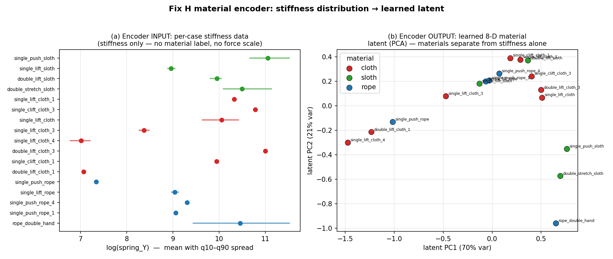
Leakage audit: encoder input vs encoder output latents. Rope replay performance with stiffness-only input vs with force scale re-added.
7 — RL on Top of the Transformer Adds Nothing (measured negative result)
PPO fine-tuning of the noise-injected transformer: identical to warm-start on all 6 groups
After the transformer+noise policy matched RL on replay and surpassed it on some ramps,
we ran RL fine-tuning on the noise-injected transformer BC (50K PPO steps, same recipe that worked earlier).
Every checkpoint was identical to the BC warm-start on all 6 evaluation groups.
Why? The scheduled-sampling noise already gives BC training exposure to the closed-loop
distribution. RL's contribution in earlier experiments was to solve the covariate shift
problem by training on self-generated rollouts. Once BC has been given that coverage
through scheduled sampling, there is nothing left for RL to fix.
This reframes RL's contribution: it was a diagnosis tool and an early fix,
not a necessary component. RL's lasting contribution is identifying that distribution shift
was the problem. The cleaner solution turned out to be simulating it in supervised training.
Summary — err_ratio across all policy variants
Lower is better. Best value per column in bold.
Policy
rope replay
rope ramp
cloth replay
cloth ramp
sloth replay
sloth ramp
BC base
0.75
0.66
0.36
6.55
0.87
5.06
BC + 2D descriptor
0.46
0.62
0.37
2.28
0.68
1.73
RL + 2D descriptor
0.41
0.52
0.37
2.31
0.66
2.66
Transformer + scheduled sampling
0.39
0.59
0.31
3.95
0.72
2.25
FiLM 11D physics
0.48
0.54
0.36
3.76
0.74
1.38
Goal-aware ensemble ⭐ (Exp 8)
0.39
0.54
0.31
2.31
0.72
1.38
err_ratio = mean‖F − F*‖ / mean‖F*‖ (all numbers from the final 14-case eval sweeps).
Bold = best per column. No single policy is best everywhere — the transformer owns replay,
FiLM owns rope/sloth ramps, RL keeps cloth ramp. That complementarity is what the goal-aware
ensemble (Experiment 8, next section) exploits. Cloth ramp remains the hardest case for all policies.
RL — cloth replay
RL — rope ramp (best RL ramp)
RL — sloth replay
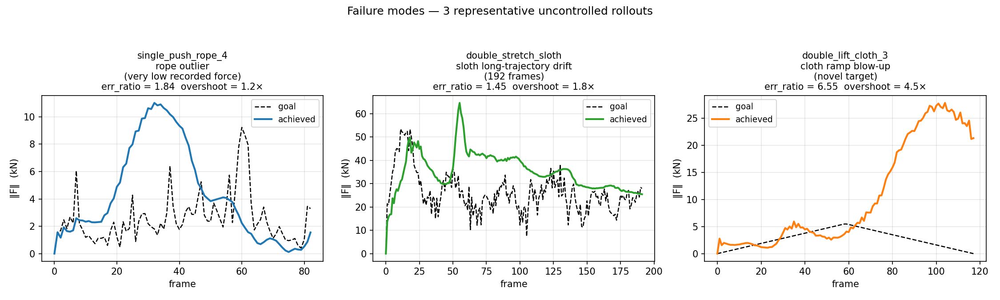
Failure cases and limitations: cloth ramp remains the hardest. The policy can reduce force but overshoots the descending ramp consistently.
Malak Pushing Further — Ensemble, Diagnosis & Generalization
The experiment sequence above produced two complementary specialists: the noise-injected
transformer (best in-distribution tracking) and the 11D-FiLM physics policy (best on
out-of-distribution ramps). No single policy is best everywhere. The experiments below ask
three follow-up questions: (1) can we get the best of both without retraining?
(2) where exactly is the remaining error concentrated? and
(3) does the material descriptor truly generalize to a material the policy has
never seen?
8 — Goal-Aware Policy Ensemble (no training, no extra simulator calls)
14-case mean err_ratio 0.66 — beats every single policy (best single 0.71), within 0.03 of the per-case oracle
At deployment we always know our own commanded force goal F*(t). That is enough to
route each rollout to the right specialist before running it. We compute one cheap
feature from the goal alone — does the commanded force return to ~0 after its peak? — which
cleanly separates a release/ramp maneuver from a hold/replay goal (14/14 cases routed
correctly). The router then picks:
Ramp-shaped goal → 11D-FiLM physics policy (best OOD) — except
cloth ramps, where FiLM regresses and we keep the RL policy. This material-aware exception is
itself a finding: cloth ramp is the one place a single specialist is not enough.
The material is read from the descriptor, so the entire router is deployment-legitimate — no
look-ahead, no oracle labels, no new training. The deployable ensemble matches or beats the
best single policy on all six material×mode groups and lands within 0.03 of
a per-case oracle that is allowed to peek at every policy's result.
Per-group err_ratio. Green = deployable goal-aware ensemble; gray = per-case oracle
(upper bound). The ensemble tracks the oracle on every group. Cloth ramp plateaus at ~2.3
for every policy including the oracle — confirming it is a genuinely hard control
problem, not a routing artifact.
Group
Best single policy
Ensemble (deployable)
Oracle
rope replay
0.391
0.391
0.385
rope ramp
0.524
0.544
0.524
cloth replay
0.305
0.305
0.289
cloth ramp
2.281
2.310
2.281
sloth replay
0.660
0.719
0.626
sloth ramp
1.382
1.382
1.382
14-case mean
0.713
0.655
0.626
"Best single policy" takes the best individual policy per group (an unfair, optimistic
baseline); the deployable ensemble still beats its 14-case mean because no single policy is
simultaneously best across groups.
9 — Where the Error Lives: Project Progression and Per-Axis Diagnosis
Fy (lift axis) is the hardest component everywhere · cloth ramp is the standing frontier
Reading the whole project as one chart: each idea moved specific groups. Material conditioning
collapsed the ramp disasters (cloth ramp 6.6 → 2.3, sloth ramp 5.1 → 1.4); the transformer plus
scheduled sampling won replay; FiLM physics won the rope/sloth ramps. The deployable ensemble
(green dashed) is the per-group floor of this whole sequence. Cloth ramp is the one group that
never breaks below ~2.3.
err_ratio across the development sequence, one panel per group. Green dashed = deployable
ensemble (the final result); red dotted = err_ratio 1.0 (uncontrolled).
Breaking the residual error down by force axis reveals a consistent physical story:
the vertical lift axis (Fy) is the hardest to control for every material, and
dramatically so for the heavy plush sloth (normalized error 1.36 on Fy vs 0.45 on Fz). The
in-plane push axes (Fx, Fz) are far easier. This is intuitive — the lift axis fights gravity and
drives the large deformation/release dynamics, exactly the regime where compounding error bites.
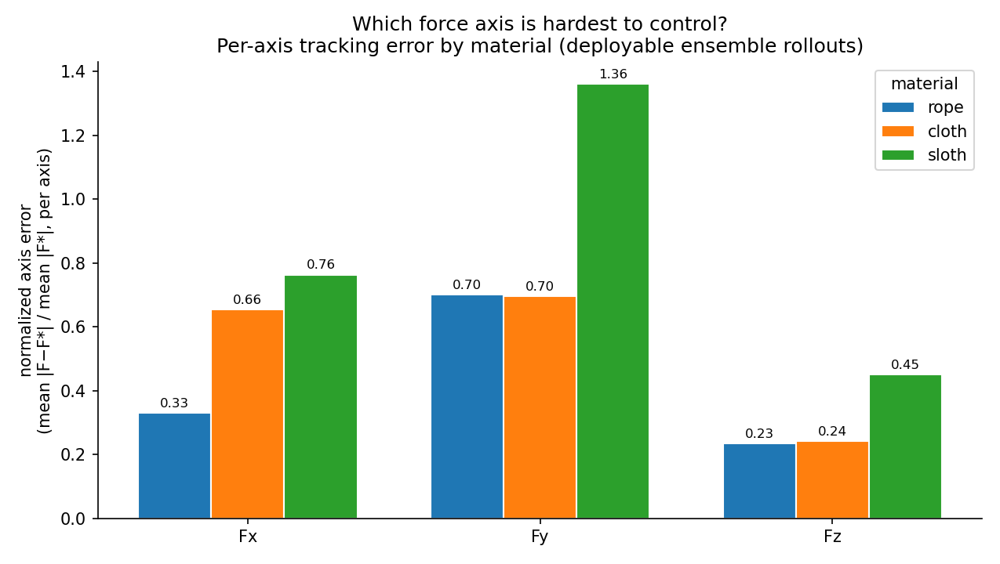
Per-axis normalized tracking error (mean |F−F*| / mean |F*|) on the deployable-ensemble
rollouts. Fy dominates the error budget; Fz is consistently the easiest axis.
10 — Generalization to a Held-Out Material (leave-sloth-out)
Every result so far trained on all three materials. The real test of the FiLM physics
descriptor is whether it lets the policy control a material it has never seen. We
retrain the exact 11D-FiLM recipe on rope and cloth only — sloth is held out of
the weights entirely — and evaluate on the sloth cases. For the unseen material's output
normalization we use a pooled rope+cloth action scaler (derivable with zero
sloth data, so the whole pipeline stays deployment-legitimate).
The result is an honest partial transfer:
Sloth case
Trained WITH sloth
Sloth HELD OUT (rope+cloth only)
single_lift_sloth (replay)
0.242
0.468
double_lift_sloth (replay)
1.152
1.461
double_stretch_sloth (replay)
0.831
3.049
double_stretch_sloth (ramp)
1.382
3.566
mean
0.902
2.136
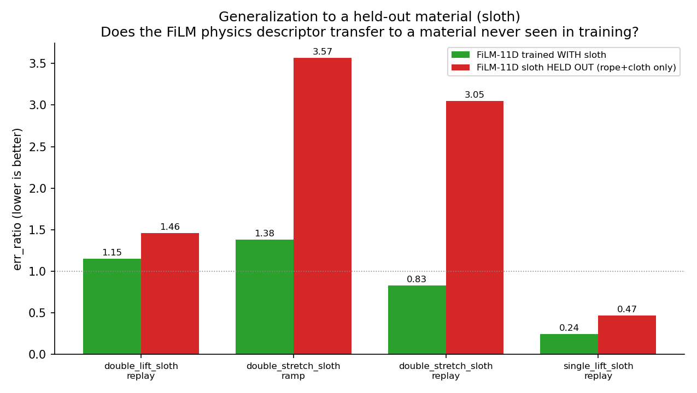
Green = FiLM-11D trained with sloth; red = sloth fully held out (trained on rope+cloth only).
The gentle single-lift case stays controllable (0.47, well under 1.0) despite never being seen;
the aggressive double-stretch cases degrade most.
Held-out success — single_lift_sloth replay, err_ratio 0.47.
The policy has never seen a sloth, yet tracks the lift by reading the stiffness descriptor.
Held-out failure mode — double_stretch_sloth ramp, err_ratio 3.57.
On the most aggressive maneuver, extrapolation from rope/cloth breaks down.
What this tells us: the stiffness descriptor carries real material
physics — a policy that never saw sloth still controls a gentle sloth lift (0.47) by reading its
stiffness and interpolating from rope/cloth behavior. But conditioning is not a
substitute for training on the material: the most demanding case, the aggressive
double-stretch (the largest deformation, furthest from anything rope or cloth produce), is
exactly where extrapolation breaks down (0.83 → 3.05). Part of that gap is also the pooled
action scaler, which slightly overshoots the true sloth motion scale — a reminder that
generalizing to a new material needs both a conditioning signal and a sensible output scale.
Limitations & Future Work
Limitations — stated plainly
Everything lives inside the twin. Force ground truth is the calibrated
simulator's spring force, so all results inherit PhysTwin's per-case calibration accuracy.
There is no sim-to-real transfer claim here; the force magnitudes (kN-scale) are simulator
units, not realistic hand forces.
Cloth ramp is unsolved. Every policy — and the per-case oracle over all of
them — plateaus at err_ratio ≈ 2.3. We can reduce force on the descending ramp but
consistently overshoot it.
Small case count. ~17 distinct cases means per-case conditioning richer than
~5–6 dims starts memorizing case identity instead of material physics (measured in the
descriptor-dimension sweep).
Held-out-material transfer is partial. A never-seen material is controllable
on gentle goals (0.47) but degrades 2–4× on aggressive ones (Experiment 10).
A noise floor from the demonstrations themselves. The recorded human gripper
motion is not rigid (~1.4 mm/frame intra-cluster deviation), which caps how precisely any
imitation-derived policy can act.
Future work
Crack the cloth-ramp frontier — every policy and the per-case oracle
plateau at err_ratio ≈ 2.3 on cloth ramp (Experiment 8). Adding cloth-ramp data helps cloth but
regresses rope (a measured shared-capacity trade-off). The next move is per-material output heads
or per-material data weighting so cloth-ramp coverage doesn't crowd out rope.
MPC upper bound — the goal-aware ensemble gives an empirical per-case oracle, but
it is still bounded by the policies we trained. Model-predictive control with full differentiable-
simulator access would give a true control ceiling — especially diagnostic on cloth ramp, to tell
whether the plateau is a policy limit or a physics limit.
Target the Fy (lift) axis — the per-axis diagnosis (Experiment 9) shows the
vertical lift axis dominates the error budget on every material. An axis-weighted loss or reward,
or an explicit gravity-compensation term, could attack the error where it actually concentrates.
Scaling the BC dataset — 14 real cases and 218 synthetic trajectories is small.
The synthetic generation pipeline is already in place; more diverse motion families
would improve coverage of the ramp distribution and could strengthen held-out-material transfer.
Context adapter (VLA-style) — inject an external task description
(e.g., "lift gently") into the policy as a learned conditioning vector. We tested adapter tokens
and found them harmful; a summary-injection approach (external to the attention sequence)
may avoid the memorization problem.